Lee Tusman
↩ Everyday
<
>
Title: Pico-8 Quilt Generator
Year: 2025
Medium: Web-based software (Pico-8/Lua)
URL: Pico-8 Quilt Generator↩
Description:
Pico-8 Quilt Generator uses a custom dataset of North American quilting patterns I encoded into standardized 8x8 grids. Currently two dozen quilt patterns are part of the set including Log Cabin, Housetop variation, Big Quarters, Crazy quilt, Dresden plate, Checkerboard, Lazy Gal, Diamond in a Square, Amish bars, God's Eye, Anvil, Drunkard's Path, and others.
The software was written in Pico-8 (Lua).
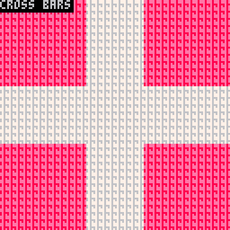
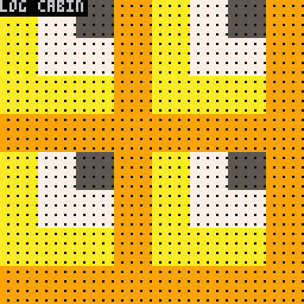
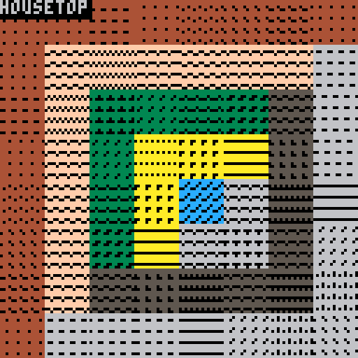
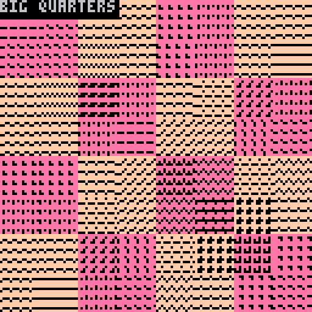
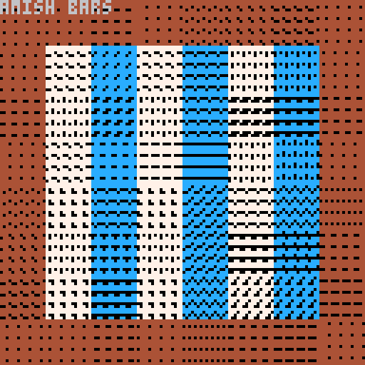
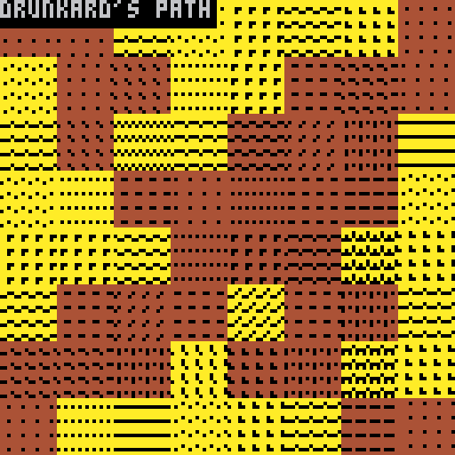
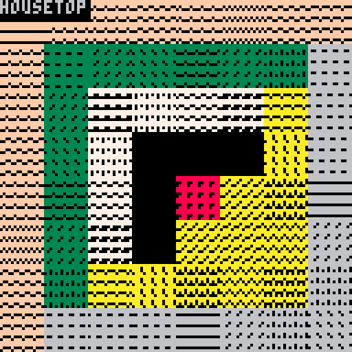
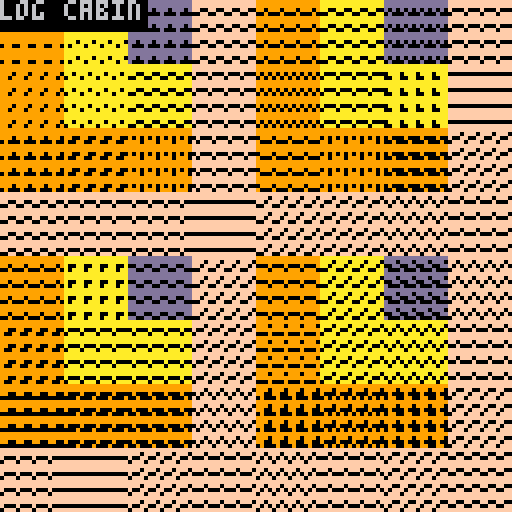
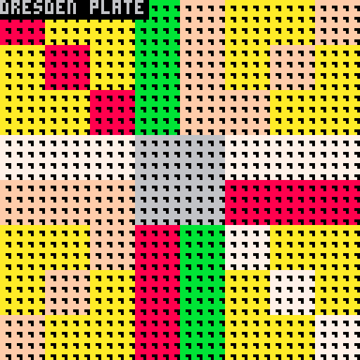
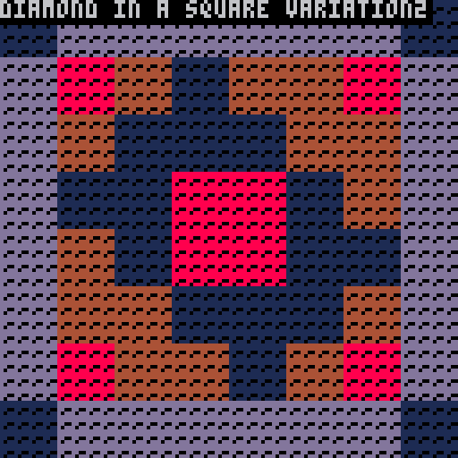
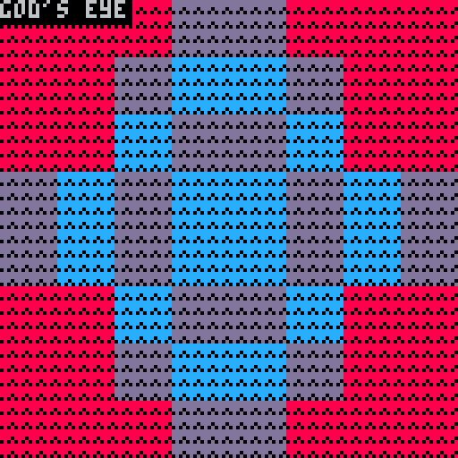
©opyleft